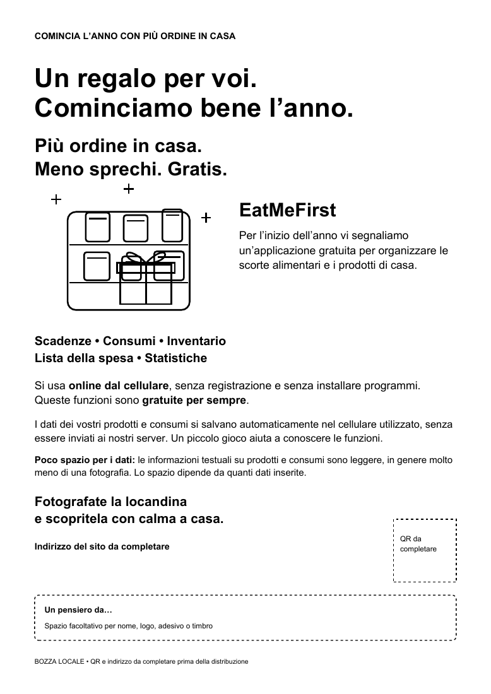
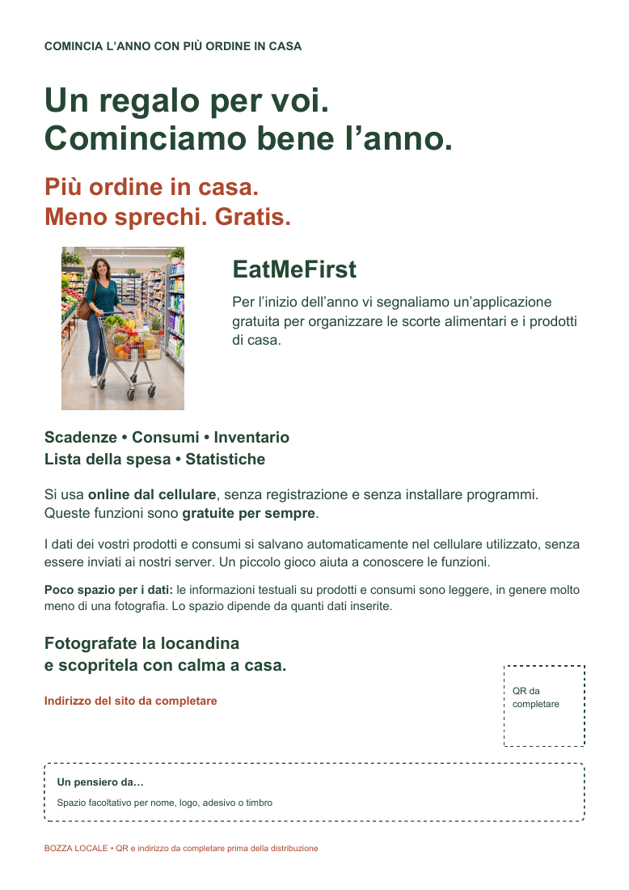

Bianco e nero · anonima
Formato A4. Fondo bianco; logo o timbro facoltativi nella versione dedicata.
Scarica PDF di bozzaScegliete il formato più comodo. Il bianco e nero usa un disegno al tratto e poco inchiostro; la versione a colori contiene una fotografia.
Prima della distribuzione inseriremo il QR e il collegamento funzionante al sito. Questi PDF sono ancora bozze.
Formato A4. Fondo bianco; logo o timbro facoltativi nella versione dedicata.
Scarica PDF di bozza
Formato A4. Fondo bianco; logo o timbro facoltativi nella versione dedicata.
Scarica PDF di bozzaFormato A4. Fondo bianco; logo o timbro facoltativi nella versione dedicata.
Scarica PDF di bozza
Formato A4. Fondo bianco; logo o timbro facoltativi nella versione dedicata.
Scarica PDF di bozzaNessun invio parte da questa pagina. Scegliete voi il canale e i destinatari.